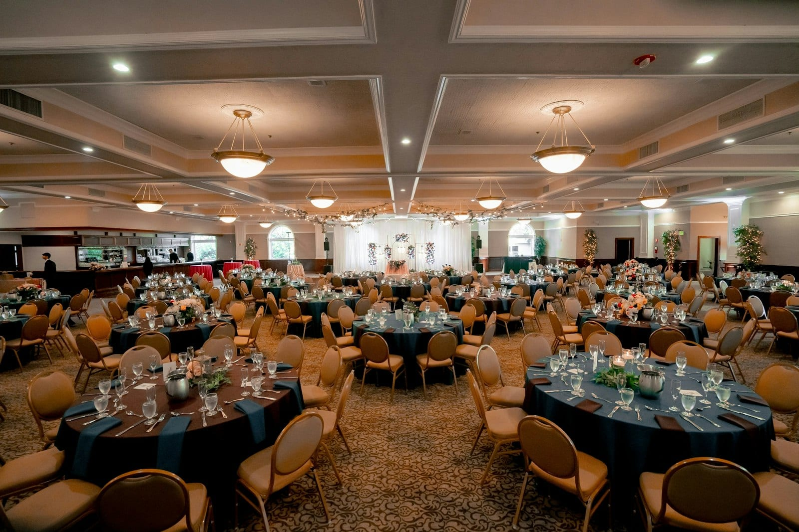
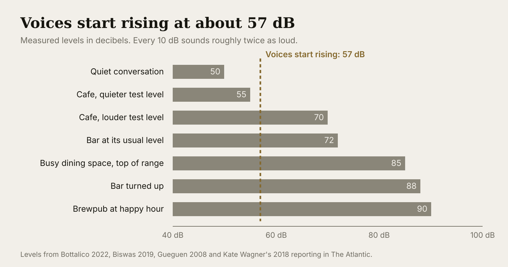
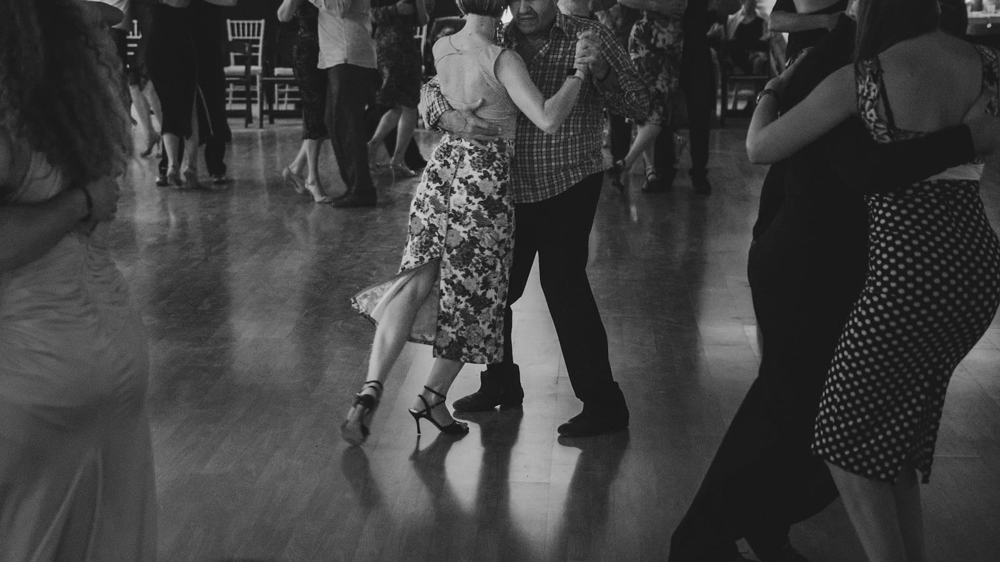

PLANNING
Why dinner gets louder as the night goes on
At seven the ballroom is pleasant. By 8:15 people are shouting across the table and someone asks the band to turn down. The band hasn't touched anything. Here's what's happening, what it does to your guests, and the two-level plan we set with you to keep dinner talkable.

- Once the background in a space passes about 57 decibels, guests raise their voices, which raises the background, which raises every voice again. Nobody turns anything up; the guests do it to each other.
- Loud music makes guests drink faster, order heavier food and taste less of it. Guests over sixty give up on conversation first.
- The fix is two levels agreed before the night: a dinner level that sits under the conversation, and a dance level that arrives when the floor opens.
The band didn't touch anything #
At seven the ballroom is pleasant. The band is playing something soft, people are finding their seats, and you can hear the person across the table. By 8:15 the same band at the same level is buried, every table is shouting, and somebody comes to find you to ask if the music can come down.
It can, and it won't help much, because the music was never the loudest thing in the space. The guests are. Here is why that happens, and the one decision that keeps it from happening at your event.
The climb #
Loudness is measured in decibels. A quiet office sits around 50. A busy restaurant runs 70 to 80. A ten-point jump sounds about twice as loud to the person in the seat.
When the background in a space passes roughly 57 decibels, people start raising their voices to be understood. They do it without noticing. A lab at the University of Illinois measured the tipping point at about that level, and found every extra decibel of background adds about half a decibel to every voice in the space. Two hundred guests do that at once. Their raised voices become the new background, so everyone raises again, and the level climbs until nobody can talk any louder. An acoustics researcher at American University calls it a tragedy of the commons, the same thing that happens to a shared pasture: the quiet belongs to everyone, and every table takes a little more of it.
That climb is a big part of why noise was the number-one complaint in Zagat's 2018 national dining survey.

What loud does to your guests #
Whoever sets the level is also deciding what your guests do. In two French bars, researchers turned the music from a normal 72 decibels up to 88 and watched. The average guest went from 2.6 drinks to 3.4, and finished each beer three minutes faster (we went through that study here). In a Stockholm café, music at 70 decibels produced about 20 percent more orders of the heavy items on the menu than music at 55. And a University of Manchester study found that loud background noise made food taste less sweet and less salty. Your caterer's work is partly in the hands of whoever sets the level.
Older guests feel all of this first. Adults over sixty with ordinary hearing need a voice to sit a few decibels further above the background than younger adults do to follow it. A Washington planner told Washingtonian she started leaving earplugs on the tables for older guests because the volume complaints never stopped.
The earplugs are a workaround for a decision somebody else made.
Two levels, agreed before the night #
The band picks where the climb starts, by where it sits when guests arrive. If the band is already at 60 decibels when guests sit down, the first raised voice tips the space over the line. At 50, two hundred conversations fit before anyone has to raise a voice. So the dinner level is set under the conversation, low enough that the table by the window can talk without effort, and it stays there through the speeches. That level is set for the oldest guest at the farthest table. (The actual numbers, and what they sound like, are here.)
The second level arrives when the floor opens. That is when the band is supposed to be the loudest thing in the space, and guests who want to talk have somewhere to go: the bar, the patio, the hallway. Both levels, and the moment the change happens, are agreed with the planner before the date. Nobody negotiates it at 8:15 while the client's mother asks for the fourth time.

How we handle it #
We set a dinner level and a dance level with the planner before the night, and the band holds the dinner level even as the space gets louder around it, because a band that climbs with the crowd starts the spiral. The dinner level is set for the farthest table, with the oldest guests in mind. The dance level is for the floor. We write the moment of the change into the run of the evening.
Sources
- Bottalico, P., Piper, R. N., and Legner, B. (2022). Lombard effect, intelligibility, ambient noise, and willingness to spend time and money in a restaurant amongst older adults. Scientific Reports. PMC
- Boren, B. (2022). A game theory model of the Lombard effect in public spaces. Acoustical Society of America, Nashville. EurekAlert
- Zagat (2018). National Dining Trends Survey, as reported by AARP: noise the top complaint among diners. AARP
- Guéguen, N., Jacob, C., Le Guellec, H., Morineau, T., and Lourel, M. (2008). Sound level of environmental music and drinking behavior: a field experiment with beer drinkers. Alcoholism: Clinical and Experimental Research, 32(10). ScienceDaily
- Biswas, D., Lund, K., and Szocs, C. (2019). Sounds like a healthy retail atmospheric strategy: effects of ambient music and background noise on food sales. Journal of the Academy of Marketing Science. Cosmos
- Woods, A. T., et al. (2011). Effect of background noise on food perception. Food Quality and Preference, 22(1). Abstract
- Shojaei, E., et al. (2016). Effect of signal to noise ratio on the speech perception ability of older adults. Medical Journal of the Islamic Republic of Iran, 30. PMC
- Wagner, K. (2018). How Restaurants Got So Loud. The Atlantic, November 27, 2018. Chart levels for the brewpub. Summary
- Washingtonian (2007). How to Keep Wedding Guests Happy. Washingtonian